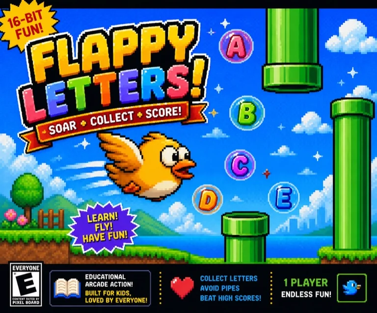

下一步：在普通局先飞过一根管道

三段飞行路线 · 完美穿越蓄羽盾 · 按住滑翔救急
选“闯关选择”：穿进门洞时才判答。没进洞时沿用原碰撞规则，题目保留到下一扇选词门；不会在飞过之后补判。飞行中点暂停（P / Esc），可看清下一门完整的上下选项。
两种练习不计分；接字回中失败不会自动回起点。三门仍只练扇翅。本 QA 独立存档，不迁移正式或旧 QA。
点一下，扇一下 · 不用按住屏幕
看绿色缺口 · 居中穿越攒羽盾
快落地时按住滑翔 · 完美穿越补充能量
拼词：接住下一字母。选择：穿过正确答案门洞。每完成 5 题升 1 关；缺心时补 1 心（最多 3 心），满心不补。升关会加速，速度有上限。每 8 根管道获得航段徽章。
完美穿越蓄羽到 3/3，获得 1 个羽盾。持盾时继续完美可保留最多 2/3 补盾准备，不叠加第二盾；耗盾后仍要再完美穿越才能补盾（准备 2/3 时再完美 1 次）。羽盾仅抵一次接触伤害，不抵选错答案。
空格 / ↑ 扇翅 · G 滑翔 · H 提示（15 分）· P 暂停 · M 静音
预览：最高分与静音仅保留在本页，刷新后重置。
也可自选专项 · 不计分
同词练习 · 不计最高分
原速100% · 已暂停
按 P 或 Esc 继续
🖱 点击 / 空格 / ⬆ 扇翅膀 · 💡 H 提示 · P 暂停 · M 静音